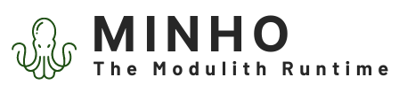

It provides extensible modules launchers per module kind, out of the box services that any module running on K5 runtime can leverage without cost.
K5 is GFLE (Green Fast Light Efficient) runtime.

Lightning fast
K5 is very light and fast. Especially if you use the K5 service model, you can create complex modules in a minute, running super fast.
Any framework in one runtime
K5 supports a large number of Java frameworks that you can mix all together in one or multiple runtime instances.

Cloud ready
K5 is cloud ready runtime, able to run on a VM, Docker, Kubernetes, ...

Green and resources efficient
K5 is resources efficient as it allows you to gather different modules in different runtimes. One module is not necessary one runtime anymore. Better for our planet: K5 is a green.

Turnkey services
You want to work with a database, you want to expose a REST API. You don't have to implement all yourself, you can use services directly provided by K5.

Easily create runtime packages
Don't worry how to create your runtime packages. K5 provides tools allowing you to easily create the packages, whatever you want to create a folder, an archive, a image.